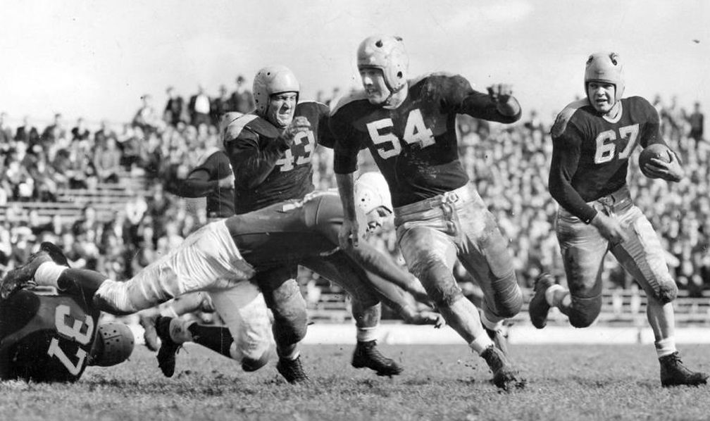
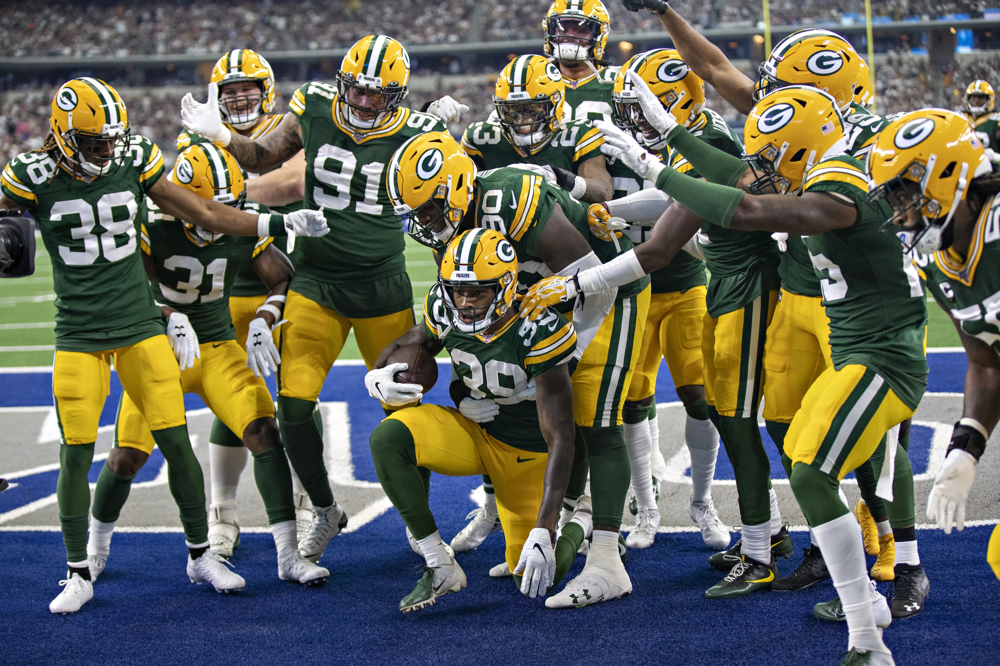

Los Green Bay Packers son un equipo de fútbol americano profesional que ha jugado profesionalmente en la Liga Nacional de Fútbol Americano (NFL) desde 1921. El equipo fue fundado en 1919 por Curly Lambeau y George Whitney Calhoun, y durante los dos años siguientes jugó contra equipos locales en Wisconsin y Michigan. En 1921, los Packers se unieron a la Asociación Americana de Fútbol Profesional, precursora de la NFL con Curly Lambeau como entrenador. Después de caer en problemas financieros, la Corporación de Fútbol de Green Bay, ahora conocida como Green Bay Packers, Inc., se formó en 1923. 
Packers se convirtieron en un equipo de fútbol americano de propiedad pública dirigido por una junta directiva elegida cada año. El equipo ganó seis campeonatos de la NFL de 1929 a 1944, incluyendo tres consecutivos (1929-1931). En el camino, Curly Lambeau, con la ayuda del receptor Don Hutson, revolucionó el fútbol mediante el desarrollo y la utilización del pase delantero.
Después de que Curly Lambeau renunciara a los Packers en 1949, el equipo cayó en una depresión. No tuvieron un récord de victorias durante 11 temporadas consecutivas hasta 1959, año en que los Packers contrataron a un nuevo entrenador, Vince Lombardi. Lombardi pasaría a liderar uno de los equipos más exitosos en la historia de la liga. Trece jugadores del Salón de la Fama del Fútbol Profesional jugaron para Lombardi, incluyendo al mariscal de campo Bart Starr y al linebacker Ray Nitschke. Los Packers perdieron el Campeonato de la NFL de 1960, sin embargo, pasarían a ganar cinco campeonatos en siete años bajo el mando de Lombardi, incluyendo tres consecutivos entre 1965 y 1967. Esto incluyó el infame Ice Bowl y los dos primeros Super Bowls. Tras el fallecimiento de Curly Lambeau en 1965, el nuevo estadio de los Packers (construido en 1957 como City Stadium) fue nombrado Lambeau Field en su honor. Cinco años después, el segundo gran entrenador de los Packers, Vince Lombardi, murió, sólo dos años después de dejar el equipo por los Pieles Rojas de Washington.
La era de Rodgers (2008-presente)
El 4 de marzo de 2008, Brett Favre anunció su retiro. Sin embargo, dentro de cinco meses, solicitó su reincorporación a la NFL el 29 de julio. La petición de Favre fue concedida por el comisionado Roger Goodell, efectiva el 4 de agosto de 2008. El 6 de agosto de 2008, se anunció que Brett Favre fue intercambiado a los New York Jets por una elección de reclutamiento condicional en 2009.
Los Packers comenzaron su temporada 2008 con su primera elección en la primera ronda de 2005, el mariscal de campo Aaron Rodgers, bajo el centro, como el primer QB aparte de Favre en comenzar para los Packers en 16 años. Rodgers jugó bien en su primer año como titular de los Packers, lanzando más de 4.000 yardas y 28 touchdowns. Sin embargo, las lesiones afectaron a la defensa de los Packers, ya que perdieron 7 partidos reñidos por 4 puntos o menos, terminando con un récord de 6-10. Después de la temporada, ocho entrenadores asistentes fueron despedidos por McCarthy, incluyendo a Bob Sanders, el coordinador defensivo del equipo, que fue reemplazado por Dom Capers.